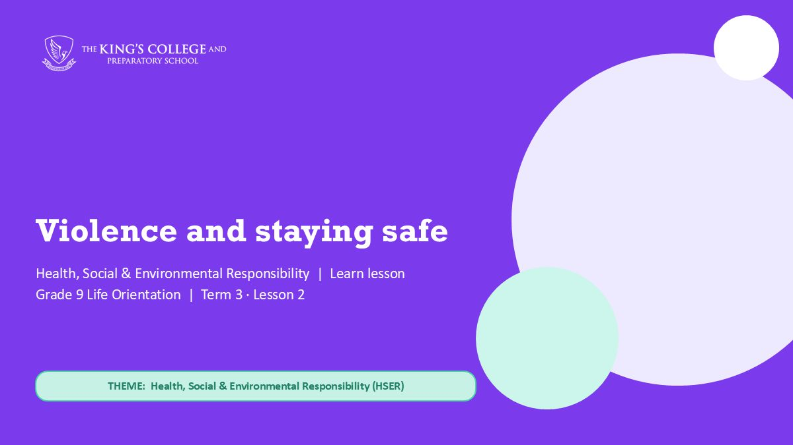

Term 3 · Lesson 2 · Learn lesson
Violence and staying safe
Start here
Today I will
- Identify types and causes of violence
- Describe the impact of violence and how to stay safe
- Explain what bystanders can do and what the law says
Is violence only physical? Name other ways people can be hurt on purpose.
Words to Know
| Word | Meaning |
|---|---|
| Violence | Using force, threats or power on purpose in a way that harms, or is likely to harm, someone. |
| Gender-based violence (GBV) | Violence against someone because of their gender. Most often against women and girls. |
| Bullying | Repeatedly hurting or scaring someone who has less power, on purpose. |
| Cyberbullying | Bullying through phones, apps, games or social media. |
| Bystander | Someone who sees violence or bullying happen but does nothing. |
| Upstander | Someone who safely takes action to stop harm or help the victim. |
Slides

Videos
Notes
Violence harms individuals, families and whole communities, and South Africa has high levels of it. Violence is never acceptable and is never the victim's fault. In this lesson you learn what violence is, its types and causes, how it affects people, how to stay safe and help others, and what the law says. Knowing this can protect you and the people you care about.
What is violence?
The World Health Organization explains violence as deliberately using physical force or power, or threatening to, against yourself, someone else or a group, in a way that hurts or is likely to hurt people in body or mind (WHO, World Report on Violence and Health, 2002). This means violence does not have to be physical: threats, humiliation and controlling someone are also violence. Violence happens at home, at school, in relationships, in communities and online.
Types of violence
| Type | What it means | Examples |
|---|---|---|
| Physical | Using force to hurt someone | Hitting, kicking, pushing, using a weapon |
| Emotional / verbal | Hurting someone with words or control | Threats, insults, humiliation, isolating or controlling someone |
| Sexual | Any unwanted sexual act, touch or pressure | Unwanted touching, forcing or pressuring someone, sharing intimate images |
| Gender-based violence (GBV) | Violence against someone because of their gender | Domestic violence, sexual harassment, abuse in dating relationships |
| Bullying | Repeated harm to someone with less power | Name-calling, excluding, hitting, taking belongings |
| Cyberbullying | Bullying through technology | Cruel posts, edited photos, threats in group chats, fake profiles |
| Economic | Controlling or taking someone's money or resources | Taking a learner's lunch money; refusing to give a partner money |
| Community and gang | Violence between groups | Gang fights, crime, mob violence |
Causes of violence
Causes help us to understand and prevent violence, but they are never an excuse. People always remain responsible for their actions.
- Substance abuse: alcohol and drugs lower self-control.
- Poor conflict skills and uncontrolled anger.
- Harmful beliefs about power and gender, e.g. that men should control women.
- Violence learnt at home or seen often in the community, in films, games and online.
- Peer pressure and wanting to belong to a group or gang.
- Poverty, unemployment and inequality, which cause frustration and hopelessness.
- Weak law enforcement, when people believe they will not be caught.
The impact of violence
| On the victim | On families and communities |
|---|---|
| Physical injuries | Fear: people stay indoors and don't trust each other |
| Fear, anxiety, depression, trauma | Children grow up thinking violence is normal |
| Low self-esteem, shame and isolation | Learners drop out of school; businesses close |
| Poor concentration and marks; avoiding school | Huge costs for health care, policing and courts |
| Turning to unhealthy coping such as substances | A cycle of violence passed from one generation to the next |
Staying safe
- Trust your instincts: if something feels wrong, leave and go to where there are people you trust.
- Move in groups, especially after dark or after practice; avoid isolated places.
- Tell your parents where you are and who you are with; share your location if your family agrees.
- Online: keep accounts private, never share passwords or intimate images, block and report abusers, and keep screenshots as evidence.
- In relationships: a partner who controls, threatens or isolates you is showing warning signs of abuse.
- Have a plan: know the numbers to call and which adults you can go to.
Bystanders and upstanders
A bystander sees violence or bullying happening but does nothing. Bystanders often think 'it's not my business' or are afraid. When bystanders laugh, share or stay silent, the bully feels supported. An upstander takes safe action. You do not have to be a hero; you have to do something safe.
- Don't join in: no laughing, liking, sharing or forwarding.
- Support the victim: sit with them, message them, tell them it is not their fault.
- Get help: tell a teacher, counsellor or parent; report the post in the app.
- Keep evidence: screenshots of messages (but never forward harmful images).
- Only step in directly if it is safe; never use violence to stop violence.
The law protects you
| Law | What it does |
|---|---|
| Bill of Rights, section 12 | Everyone has the right "to be free from all forms of violence from either public or private sources" (Constitution, 1996, s 12). |
| Domestic Violence Act | Victims of abuse in a home or relationship can get a protection order from a magistrate's court. |
| Protection from Harassment Act | Anyone, including a child, can apply for a protection order against someone who harasses or bullies them. |
| Cybercrimes Act | Sending messages that threaten violence or damage to people, or sharing intimate images without consent, is a crime. |
| Children's Act | Protects children from abuse and neglect; teachers and others must report suspected abuse. |
| Sexual Offences Act | Makes all forms of sexual abuse and exploitation crimes. |
Where to get help
| Who | Contact |
|---|---|
| Emergency: South African Police Service | 10111 |
| Childline (free, for children and teens) | 116 |
| GBV Command Centre (24 hours) | 0800 428 428 |
| Lifeline (counselling) | 0861 322 322 |
| At school | A teacher, the school counsellor or the principal |
Gender-based violence in South Africa
South Africa has very high levels of gender-based violence (GBV). Most victims are women and girls, but boys and men can also be victims. GBV includes physical, sexual, emotional and economic abuse, and often happens in homes and relationships, by someone the victim knows. It is rooted in harmful beliefs that one gender may control or use another. A biblical worldview teaches the opposite: men and women are equally made in God's image and must be treated with dignity. Young men have a special role in ending GBV by refusing to joke about it, calling out disrespect and treating girls and women with honour.
Warning signs of an unhealthy relationship
- Extreme jealousy or checking your phone and messages.
- Telling you who you may see or what you may wear.
- Insults, humiliation or threats, even 'as a joke'.
- Pressuring you into anything sexual.
- Cutting you off from friends and family.
- Pushing, grabbing or hitting, followed by 'it won't happen again'.
If you notice these signs, talk to a trusted adult. Abuse usually gets worse over time, not better.
Cyberbullying: why it hurts so much
Cyberbullying can feel worse than face-to-face bullying because it follows you home, can happen at any time, reaches a large audience quickly and may stay online for ever. Bullies may hide behind fake accounts. Victims often feel there is no escape. That is why bystanders matter so much: every 'like', share or laughing emoji makes the harm bigger, and every person who refuses to join in and reports it makes it smaller.
Case study: Mia speaks up
A new girl in Mia's netball team was being mocked in a class group chat: someone posted edited photos with comments about her body, and others added laughing emojis. Mia felt uncomfortable but didn't want the bullies to turn on her. She talked to Thabo and Aarav. Together they decided not to react in the chat, took screenshots and showed them to Coach Didi and the school counsellor. Mia also sent the girl a private message: 'I'm sorry this is happening. It's not OK and it's not your fault. Do you want to sit with us at lunch?' The school dealt with the boys involved, and the posts were removed. The new girl later told Mia that her message was the moment she stopped feeling completely alone.
Questions to think about: What type of violence was this? How did Mia, Thabo and Aarav move from being bystanders to upstanders? Why was keeping screenshots, but not forwarding them, important?
Worked exam answers
Question: Explain TWO ways in which violence can affect a community. (2 x 2) (4)
Answer: People become afraid to walk in the streets or go out at night ✓ so they stop trusting each other and community life breaks down ✓. Learners may drop out of school or businesses close ✓ which increases poverty and makes more violence likely ✓.
Question: Evaluate the statement: 'If you are not the bully, it is not your problem.' (1 x 4) (4)
Answer: The statement is not true ✓ because bystanders who laugh, share or stay silent make the bully feel supported ✓ especially online, where posts spread quickly to many people ✓ so safe action, such as reporting and supporting the victim, can stop the bullying and protect the victim's dignity ✓.
Be able to define violence and GBV, classify examples into types, explain causes and the impact on victims AND communities, recommend safe upstander actions (with results), and name a law and a place to report. Evaluate questions often ask about bystanders.
Violence is never OK and never the victim's fault. Stay safe, speak up, report it.
In class: Bystander or upstander?
- Read: in a Grade 9 group chat, a boy posts an edited photo of a girl with a cruel caption. Others add laughing emojis. Aarav sees it.
- What type of violence is this?
- What harm could it cause the girl?
- List THREE safe things Aarav can do.
- Who can he report it to?
Test yourself
- Define gender-based violence.
- What is the difference between a bystander and an upstander?
- Name ONE number to call for help with violence.
Show answers
1. Violence against someone because of their gender. 2. A bystander sees harm and does nothing, whereas an upstander safely takes action to stop it or help the victim. 3. SAPS 10111; Childline 116; GBV Command Centre 0800 428 428.
Finished early?
Plan a poster that helps a class group chat stop cyberbullying.
- Write a catchy heading about being an upstander, not a bystander.
- List five safe steps an upstander can take when someone is mocked online.
- Add where to get help: a teacher or counsellor, and Childline 116.
- Sketch the layout in your LO book, with the most important step in the biggest letters.